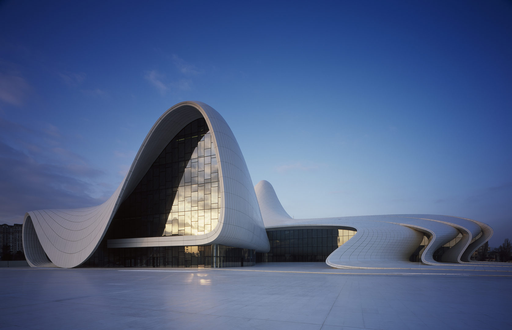
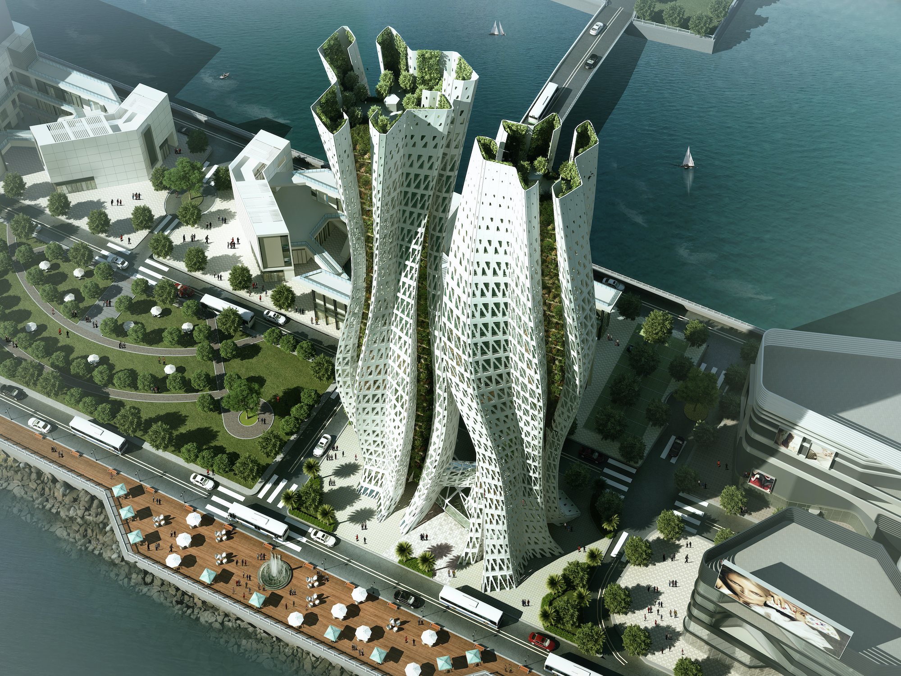
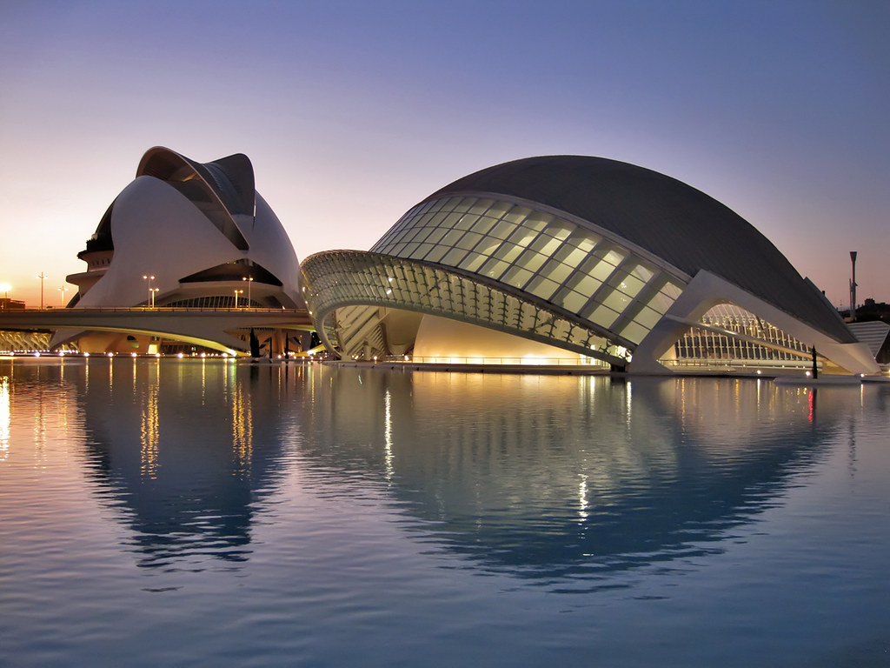

Neo-futurism is in many ways a highly imaginative and exciting style, which can often challenge the boundaries of more traditional structures. Even today, Neo-futurism is a style that articulates a clear enthusiasm for technology and the space age. The overall aesthetic of neo-futuristic architectural design can sometimes be seen as a rejection of pessimism and a reaching outwards toward a positive vision of the future. That’s why much of the neo-futuristic architecture around today could resemble the domes and habitats drawn onto the covers of sci-fi magazines, or the cityscapes of futuristic movie sets. But neo-futurism is much more than a fascination with science and technology; it is also an avant-garde movement. The avant-garde is often experimental, and as a result, many neo-futuristic building designs challenge some of the more rigid profiles of other traditional forms of architecture. Instead of boxy skyscrapers, for example, neo-futuristic design teams may twist structures so that they appear to spiral upwards. The marvelous thing about these buildings is that each one is unique, distinguishing itself from other neo-futuristic structures as well as other modern architectural design styles. They also tend to vary in size, and may sometimes feature plenty of sleek materials like glass, aluminum, and steel in their construction.

The Heydar Aliyev Centre in Baku, Azerbaijan
Zaha Hadid Architects’ light-as-air Heydar Aliyev Cultural Center in Baku, Azerbaijan, seems to be all form and no structure, but its swooping shapes mask extreme engineering. With a design continuously self-transforming in all directions, there is little sense of boundary and no indication of terminus: It’s an immersive bath of space. The immateriality of a building that varies between white, whiter, and whitest—depending on how the sun strikes its radial surfaces—seems weightless, releasing visitors from gravitational obligations. As an object, the building is subjective, provoking strong feelings cued by the physics of suspending gravity. “We wanted to take the plaza and shape it into an architectural environment, to create a continuous flow between inside and outside, to create a certain infinity,” Hadid says. “You don’t know where it all starts and ends.”

The Aero Hivehas proposed for Kowloon, Hong Kong
A combination of green and neo-futuristic architecture: Aero Hive is a breathing entity. The breath of this building transpires through vertical diaphragms in the form of green sky atriums that behave as lungs, performing the intake of oxygen and removal of carbon dioxide. This exchange is a way of natural ventilation and is the preferred option when attempting to deliver fresh air to any space due to its low energy requirements. A central tube core anchors each tower that arises 290m above ground level carrying a twisting form. The form is encapsulated by a triangulated exoskeleton articulating a multistory atrium located at the extremities leaving clear floor plates for functional distribution. The triangulated structure geometry with an average base height of 1:4 floors extends across the facade to form the exoskeleton. The rotational and scaling aspects of floor plates around the central cores creates a folding form that grows high to create an amorphous geometry with atriums that spiral along the towers in two different directions as per climatic aspects.

City of Arts and Sciences in Valencia, Spain
The City of Arts and Sciences, developed by Santiago Calatrava, is a large-scale urban recreation center for culture and science. The predominant idea of the project was to restore the neglected area of Valencia, as well as to provide a linear park that stretches through the city. The project would be one link in a chain, that was designed, to take a leap into the third millennium. The series of five buildings planned for this city will join the cultural axis linearity accompanying a sense of it and will provide an open and public space, also it will add features for the Valencians. Often named as a ‘City Within a City’, the creation of the Valencian architect caused amazement and surprise. The project respects the traditions of the Mediterranean Sea and the light blue and white blend with the pseudo-futuristic architecture of the author. The old traditions of the city led to these monumental modern sculpture. In addition, large bodies of water united all parties and gave a sense of work. The City of Arts and Sciences has taken a starring role in Tomorrow land, Disney’s latest blockbuster. “Calatrava’s architecture is just phenomenal and inventive and exciting. It’s very skeletal, like you’re looking at the vertebrae of a dinosaur or prehistoric fish“, said Chernov. “You walk into that place and you never want to leave. That’s the vibe we wanted for Tomorrowland“.